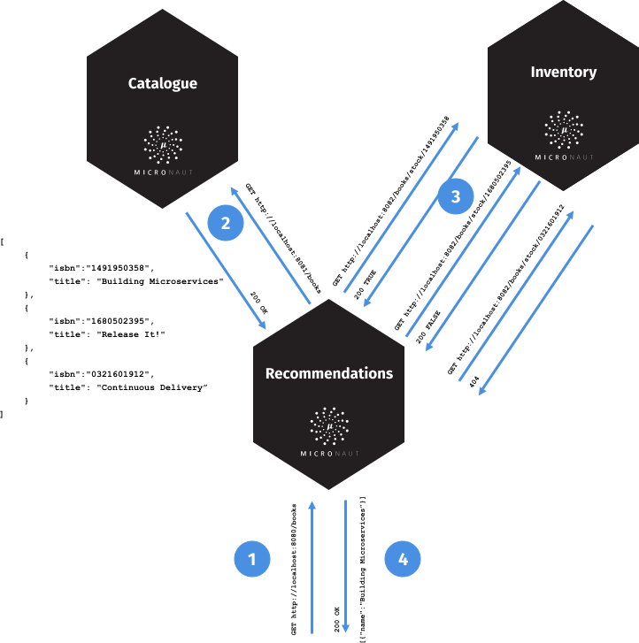
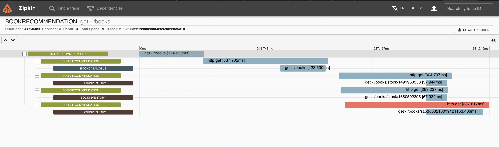
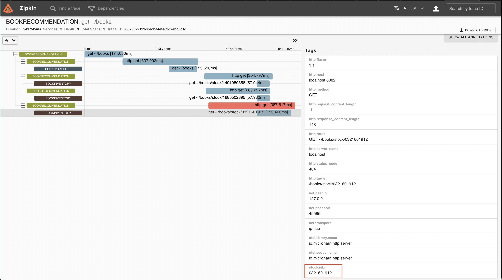

Use OpenTelemetry with Zipkin and the Micronaut Framework for Microservice Distributed Tracing
Use Zipkin distributed tracing to investigate the behavior of your Micronaut applications.
On this guide
In this section
Getting Started
In this guide, we will integrate Zipkin with a Micronaut application composed of three microservices.
Zipkin is a distributed tracing system. It helps gather timing data needed to troubleshoot latency problems in microservice architectures. It manages both the collection and lookup of this data.
You will discover how the Micronaut framework eases Zipkin integration.
What you will need
To complete this guide, you will need the following:
-
Some time on your hands
-
A decent text editor or IDE (e.g. IntelliJ IDEA)
-
JDK 21 or greater installed with
JAVA_HOMEconfigured appropriately
Solution
We recommend that you follow the instructions in the next sections and create the application step by step. However, you can go right to the completed example.
-
Download and unzip the source
Writing the Application
To learn more about this sample application, read the Consul and the Micronaut Framework - Microservices Service Discovery guide. The application contains three microservices.
-
bookcatalogue- This returns a list of books. It uses a domain consisting of a book name and an ISBN. -
bookinventory- This exposes an endpoint to check whether a book has sufficient stock to fulfill an order. It uses a domain consisting of a stock level and an ISBN. -
bookrecommendation- This consumes previous services and exposes an endpoint that recommends book names that are in stock.
The bookrecommendation service consumes endpoints exposed by the other services. The following image illustrates the application flow:

A request to bookrecommendation (http://localhost:8080/books) triggers several requests through our microservices mesh.
Zipkin and the Micronaut Framework
Install Zipkin via Docker
The quickest way to start Zipkin is via Docker:
docker run -d -p 9411:9411 openzipkin/zipkinOpenTelemetry dependencies
OpenTelemetry annotations
To enable OpenTelemetry annotations, every service includes the following annotation processor:
<!-- Add the following to your annotationProcessorPaths element -->
<annotationProcessorPath>
<groupId>io.micronaut.tracing</groupId>
<artifactId>micronaut-tracing-opentelemetry-annotation</artifactId>
</annotationProcessorPath>Micronaut OpenTelemetry HTTP
To enable creation of span objects on every HTTP server request, client request, server response, and client response, each service includes the following dependency:
<dependency>
<groupId>io.micronaut.tracing</groupId>
<artifactId>micronaut-tracing-opentelemetry-http</artifactId>
<scope>compile</scope>
</dependency>OpenTelemetry Protocol Exporter
An exporter is a component in the OpenTelemetry Collector configured to send data to different systems/back-ends.
Each service adds the OpenTelemetry Zipkin exporter dependency.
<dependency>
<groupId>io.opentelemetry</groupId>
<artifactId>opentelemetry-exporter-zipkin</artifactId>
<scope>compile</scope>
</dependency>Each service sets zipkin as the exporter in configuration:
otel.traces.exporter=zipkinDisable OpenTelemetry in Tests
Disable Micronaut Open Telemetry integration in tests:
micronaut.otel.enabled=falseChanges to Book inventory
Annotate the BookController method with @ContinueSpan and the method parameter with @SpanTag:
Running the Application
Run bookcatalogue microservice:
To run the application, execute ./mvnw mn:run.
...
14:28:34.034 [main] INFO io.micronaut.runtime.Micronaut - Startup completed in 499ms. Server Running: http://localhost:8081Run bookinventory microservice:
To run the application, execute ./mvnw mn:run.
...
14:31:13.104 [main] INFO io.micronaut.runtime.Micronaut - Startup completed in 506ms. Server Running: http://localhost:8082Run bookrecommendation microservice:
To run the application, execute ./mvnw mn:run.
...
14:31:57.389 [main] INFO io.micronaut.runtime.Micronaut - Startup completed in 523ms. Server Running: http://localhost:8080You can run a cURL command to test the whole application:
curl http://localhost:8080/books[{"name":"Building Microservices"}]You can then navigate to http://localhost:9411 to access the Zipkin UI.
The previous request generates a trace composed of 5 spans.

In the previous image, you can see the requests to bookinventory are made in parallel.
In the previous image, you can see that:
-
Whenever a Micronaut HTTP client executes a new network request, a span is involved.
-
Whenever a Micronaut server receives a request, a span is involved.
The stock.isbn tags that we configured with @SpanTag are present, as shown in the next image:

Generate a Micronaut Application Native Executable with GraalVM
We will use GraalVM, an advanced JDK with ahead-of-time Native Image compilation, to generate a native executable of this Micronaut application.
Compiling Micronaut applications ahead of time with GraalVM significantly improves startup time and reduces the memory footprint of JVM-based applications.
Only Java and Kotlin projects support using GraalVM’s native-image tool. Groovy relies heavily on reflection, which is only partially supported by GraalVM.
|
GraalVM Installation
sdk install java 25.0.2-graalFor installation on Windows, or for a manual installation on Linux or Mac, see the GraalVM Getting Started documentation.
The previous command installs Oracle GraalVM, which is free to use in production and free to redistribute, at no cost, under the GraalVM Free Terms and Conditions.
Alternatively, you can use the GraalVM Community Edition:
sdk install java 25.0.2-graalceNative Executable Generation
To generate a native executable using Maven, run:
./mvnw package -Dpackaging=native-imageThe native executable is created in the target directory and can be run with target/micronautguide.
It is possible to customize the name of the native executable or pass additional build arguments using the Maven plugin for GraalVM Native Image building. Declare the plugin as follows:
Start the native images for the three microservices and run the same curl request as before to check that everything works with GraalVM.
Next Steps
As you have seen in this guide, without any annotations, you can get distributed tracing up and running quickly with the Micronaut framework.
The Micronaut framework includes several annotations to give you more flexibility. We introduced the @ContinueSpan and @SpanTag annotations.
Also, you have at your disposal the @NewSpan annotation, which will create a new span, wrapping the method call or reactive type.
Make sure to read more about Tracing with Zipkin in the Micronaut framework.
Help with the Micronaut Framework
The Micronaut Foundation sponsored the creation of this Guide. A variety of consulting and support services are available.
License
| All guides are released with an Apache License 2.0 for the code and a Creative Commons Attribution 4.0 license for the writing and media (images). |